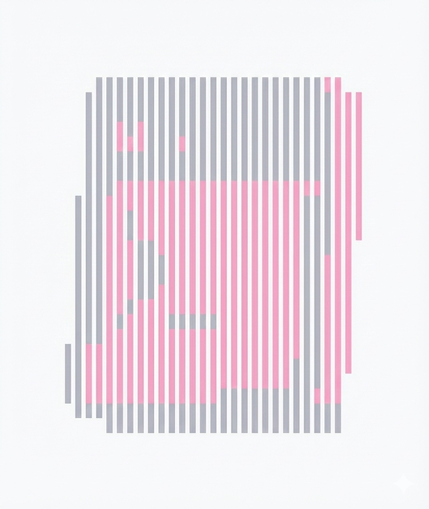
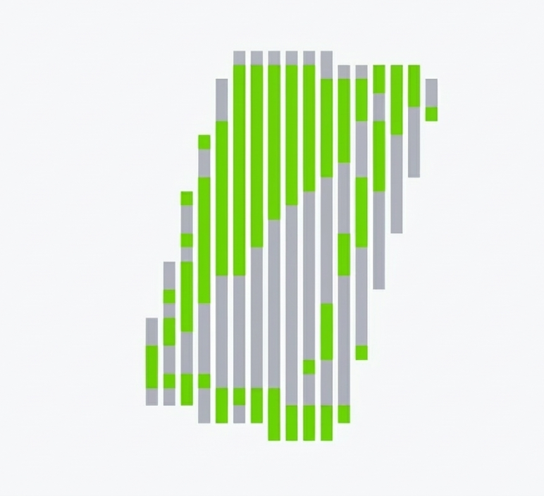

F*ck letting bugs haunt you again.
Your IDE remembers every mistake so you stop repeating the same bugs.
Kill The Bugs
SCORE: 0
Your IDE remembers every mistake so you stop repeating the same bugs.
Engram remembers past fixes, detects recurring mistakes, and warns you before repeating errors.
Apply fixes or detect mistakes using historical context from your codebase for earlier warnings and safer reuse with Engram IDE, a privacy-first extension powered locally entirely.
Most developers fix bugs repeatedly because context fades, patterns hide, and tools never
remember lessons over time.
Engram automatically detects recurring mistakes and connects current code to historical fixes
across projects locally.
Simply code normally while Engram remembers fixes, warns earlier, and replays solutions
instantly locally.
Recalls past fixes and mistake patterns ensuring your code avoids repeated errors across files and projects
Replays how you fixed similar mistakes using diffs and contextual history
Stay in the zone while your IDE remembers fixes.
Engram remembers how you fixed bugs and throws that context back at you before you waste time solving them again.
Expose mistakes you keep repeating across projects and get warned inline before those habits turn into production bugs again.